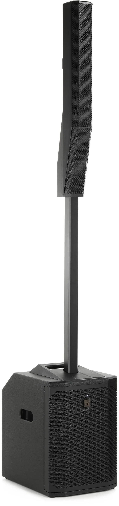

EVOLVE 50M Review: The PA I Keep Taking to Gigs

Why I Keep Coming Back to One Speaker
I've owned my Electro-Voice EVOLVE 50M for more than two years. It's been with me at small wine café gigs, large outdoor events, and plenty of performances in between. And despite the range of places I've taken it, my normal setup is still just one 50M.
That probably tells you more about my opinion than a list of specifications could.
When you're playing regularly, your PA has two jobs. Obviously, it has to sound good. But it also has to be practical enough that you're not dreading the load-in before every show. I want to spend my time performing, not building a miniature concert production every time I walk into a restaurant.
The Best Feature Isn't How Loud It Gets
Here's what I appreciate most about the 50M: someone can sit in the front row without feeling like the music is blasting directly into their face, while someone in the back can still hear just fine.
That matters more than people might think. At a restaurant or wine café, the audience didn't necessarily come just to see you. They're talking, eating, and spending time together. If the closest tables are uncomfortable, the PA is working against the show, no matter how impressive it sounds to the musician.
The column-style design helps make coverage feel more even across the audience area. It doesn't eliminate the need to position the speaker thoughtfully, and every room is different. But in the spaces where I've used it, that front-to-back experience has been a major reason I like the system.
I am very conscious of my volume. I don't want the music to overpower a conversation just because I have enough power to do it. With the EVOLVE 50M, I can aim for clarity throughout the space rather than trying to win a loudness contest.
Plenty of Power Without Constantly Pushing It
I've used this PA in everything from small indoor performances to large outdoor events, and I haven't had to push it much past what I'd describe as half volume.
That's not a scientific measurement of output—where a level control sits doesn't translate neatly into a percentage of available power. The room, source levels, mixer gain, and audience size all matter. It's simply my experience: I've consistently had more output available than I've needed for the kinds of shows I play.
The sound itself is excellent. There's fullness and presence without needing to make everything aggressively loud. For my work, that combination is far more useful than bragging about how far I can turn a knob.
I also wouldn't claim that one column speaker replaces a larger PA for every outdoor festival or every crowd size. Coverage outdoors depends heavily on the area, conditions, and expectations. What I can say is that one EVOLVE 50M has handled a surprisingly wide range of my own gigs.
Setup Is Part of the Review
Gear reviews often spend pages discussing sound and barely mention what happens before the first note. But if you play multiple shows in a week, setup is a feature.
The EVOLVE 50M is straightforward to assemble, and its column format keeps the stage footprint tidy. That's valuable in restaurants and cafés where you may be working in a corner that was never designed as a stage.
A compact footprint also means fewer things for people to walk around. You're not trying to find space for big speaker stands beside tables, chairs, and servers moving through the room.
It's still equipment you have to transport, and the subwoofer isn't weightless. I'm not calling it effortless. I'm saying the setup feels sensible for the amount of sound you get back.
Do You Actually Need a Separate Mixer?
One advantage of the 50M is that it can handle mixing duties itself, depending on how many inputs you need and how complicated your show is.
For a simple setup, that could mean one less piece of gear to carry, connect, power, and troubleshoot. That's a meaningful benefit for solo performers, especially when the goal is to get in, sound good, and get out without a pile of cables.
My own equipment collection also includes an Allen & Heath CQ-20B digital mixer. There are reasons to use a dedicated mixer when you want more control, more sources, or a more involved monitoring arrangement. But not every gig calls for the same amount of production.
I would decide based on the show, not on the idea that more equipment automatically means better sound. If the built-in mixer covers your actual inputs and control needs, use it. If it doesn't, add the mixer you need.
What I Don't Like
I always look for something to criticize in a review, because no piece of equipment is perfect for everyone. But after more than two years, I don't have a significant complaint about the EVOLVE 50M.
That doesn't mean it's inexpensive, or that it's the right speaker for every musician. A column PA is a real investment, and a different format may make more sense if you routinely need to cover a very wide audience area, run multiple independent zones, or build a larger full-band system.
It also doesn't mean I've run a controlled comparison against every competing model. I haven't. This is an ownership review, not a laboratory shootout.
For the shows I actually play, I haven't found a major weakness that makes me wish I'd bought something else.
EVOLVE 50M Specs at a Glance
Here are the manufacturer specifications I think matter most for a working musician. They're useful context, but they don't replace hearing a system in the kind of room where you actually play.
| Amplifier rating | 1,000 W |
|---|---|
| Maximum SPL | 127 dB (manufacturer measurement at 1 m) |
| Coverage | 120° horizontal × 40° vertical |
| Speakers | Eight 3.5-inch column drivers and one 12-inch subwoofer |
| Frequency response | 43 Hz–20 kHz (−3 dB) |
| Mixer | Built-in eight-channel digital mixer with four XLR/TRS mic/line combo inputs, additional stereo inputs, effects and phantom power |
| Wireless features | Bluetooth audio streaming and QuickSmart Mobile app control |
| System weight | 57.75 lb total (subwoofer: 44.66 lb) |
| Assembled height | 80.5 inches |
Read the full official EVOLVE 50M technical datasheet ↗
Of those numbers, the 120° horizontal coverage is the one that best connects to my experience: I care about getting good sound to the audience without punishing the tables closest to the speaker. Of course, the coverage specification alone doesn't guarantee an even listening experience in every room.
Who Should Consider It?
If you're a solo musician or acoustic duo playing restaurants, wineries, private events, and other intimate-to-medium settings, the EVOLVE 50M deserves a serious look. Especially if you value clean audience coverage, quick setup, and the flexibility to run a simple show without a separate mixer.
If you're mostly playing tiny rooms at very low levels, you may not need to spend this much to get the job done. And if you're regularly covering very large outdoor crowds or full bands at concert levels, don't assume one unit will be sufficient just because it has worked for my events.
The question isn't whether the 50M can get loud. It's whether its coverage, workflow, and capabilities fit the work you do.
Let's Be Frank
After more than two years with the EVOLVE 50M, I still use one as my primary PA for most performances. That is my verdict.
It sounds incredible, sets up easily, has plenty of power for my needs, and can even serve as the mixer when the input requirements are simple enough. But the reason it has earned its place in my rig is more specific: people close to the speaker can enjoy the music without getting blasted, and people farther back can still hear it clearly.
For a working musician who cares about the room as much as the stage, that's a pretty compelling combination.
Would I recommend it? Absolutely—with the same qualification I'd give about any piece of gear: buy for the gigs you're actually playing, not the biggest gig you can imagine.
More from my setup
See the gear I use, or read what venues actually want from musicians and why I let the audience change the setlist.
Have a question about my setup? Get in touch.